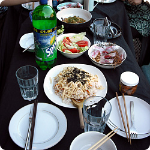
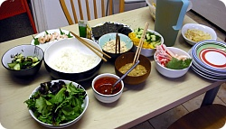
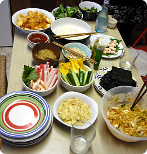
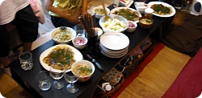

졸업식&관광으로 옆방T양 할머니,어머니,여동생,남동생 대인원이 와서^^;;
요며칠 T양 할머니/어머니 덕분에 무척 잘먹고있다//ㅅ//
밥+고추장+계란 식단에서 벗어났어요~워울~(←;;;)

요건 졸업식 당일날
ちらし寿司、そば


요건 이번주 화요일
T양 가족이 런던놀러나간 날
일러과 반친구들불러서 Y양과 M언니는
일본 스시만들구
나는 떡볶이 + 겉절이라 주장하고싶은 배추에 고추가루무침;; + 초장;;;;; 담당^^;;
얼마안있음 한국가고 딱히 뭘 만들어먹을 의욕이 없는인간이라;;
냉장고에 아무것도없었는데 나대신 고추장이랑 떡볶이 떡등 몽땅 사다준
M언니 캄샤/// ㅜ_ㅜ
이게 반칭구 딱 두명에게 연락을해서
많이오면 한 3~4명 올려나? 싶었는데
막판에 누구세요? 싶은애들까지
(아마도우리가 부른애의 친구의 친구인데 정작 우리는 본적없는^^;;;)
몰려서 13명이 되었다^^;;;
우리야 기본적으로 김밥/스시에 '뭐를 넣고 어떤순서로 먹는다'
라는 상식이있으니께 김위에 밥 올려놓는 양이라던가
속을 뭐랑 뭐를 채우면 맛있다던가;; 뭐 이런생각이 있는데
그날 스시가 난생처음인 영국아가들의 말도안되는
창작요리를 보고 우리세명은 허리꺽어지게 웃느라 바빴음^^;;;
김+밥+낫토+내김치샐러드+와사비+겨자+초고추장
이런식으로 ㅡㅡ;;;;;;
니 입크기를 생각해서 담아야지;;;;;;;
떡볶이, 겉절이는 넘 매울까봐 걱정했는데
의외로 다들 무진장 잘먹었다;;
(평소 만드는거에 고추장,고추가루 양은 반으로 줄이고 설탕을 2배부었음 ㅡㅡ;
그래도 맵다고는 했지만 먹을만한듯^^;;)
겉절이는 당췌 뭐라 설명해야할지 몰라서
그냥 Korean salad라고 말했는데
이건 같이사는 일본인아가씨 3명도 무진장 좋아하는 메뉴인데
의외로 영국애들도 입맛에 맞는듯 레시피알려달라는 애들이
몇몇있었다^^;;;
이것말고도 초고추장에 오이찍어먹는거라던가
율무차 대 히트였음 ㅋㅋㅋㅋ
M군은 인터넷으로 주문한다고 사진찍어갔다 ㅋㅋㅋㅋㅋㅋ
나능 M언니 덕분에 영국와서 첨으로 ツナマヨ(참치마요네즈)
오니기리 먹었음 ㅜㅜ 행복해/////
편의점서 삼각김밥살때 항상 먹는게
ツナマヨ랑 こんぶ >_</
새벽3시까지 떠들고놀았는데
계속 음료수+보리차 홀짝거려가믄서
먹을거차려놓고 신기하지?신기하지?
먹어봐~맛있어~일케 꼬신다거나
구경하는 재미에 시간가는줄 몰랐네용 ㅋㅋㅋㅋㅋㅋ
이제 다들 각자 다음자기자리 찾아가느라 다 헤어지는 시기인데
헤어지기전에 다같이 모여서 맛난거먹구 웃고떠들고 잼났어용 ㅎㅎㅎ

그리고 요건 어제 또다시 T양 엄마님께서 해주신 히로시마풍 오코노미야키 / 우동
우워어어어~~~ 나 우동도 영국와서 첨이야 ㅜㅜ
일본,한국 식재료를 살려면 런던에 가야하구
↓
막상 런던가면 저걸사서 또 무겁게 메이드스톤까지 돌아오는게 귀찮구
↓
안슨생님이 그러셨어 '포기해.....그럼편해'
라믄서(....;;) 에잇 안먹구말래 ㅡㅡ;;;하믄서 빈손으로 돌아오는걸
무한반복;;;;;;;
(쓰고보니까 나 진짜 ダメ人間일세;;;;;;; OTL)
워울~~~히로시마풍 오코노미야키///
우동~~~ ㅜㅜ 한국돌아가기직전에 이렇게 호강(?)할줄이야//ㅅ//
덕분에 넘 맛나게 먹었어요
같이사는 세명이 도쿄출신이 한명도 없어서
다같이 모여 밥먹을때나 요리해먹을때 재미가 쏠쏠합니다
지역특산 +_+
그리고 그 세명은 저에게
"세상에서 니가 말하는 '이거하나도 안매워 먹어봐'가 젤 신용이 안가 ㅡㅡ;;"
라고 하죠 ㅎㅎㅎㅎㅎㅎㅎ
밖에나와살믄서 한국음식 생각해보면 징짜 엄청난것 같아요
(종류도 그렇고 매운 정도도 그렇고 ^^;;;;;)
하지만 한번 멕이면 헤어나오질 못한다는거 ㅋㅋㅋ 그게 매운맛의 마력인게죠
(사실 이 '맵다'란게 맛이 아니라 자극이라 자꾸 중독되는거란 소리도 들은기억이 있는데
뭐 중요한건 맛나다는 겝니다 ㅎㅎㅎㅎㅎㅎ)